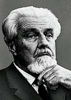

|
|
LEICHEN - LACHEN | ||||
|
|
|||||
Das Lachen - auch Werners Lachen - ist eine menschliche Ausdruckserscheinung, die mimisch durch Bewegung bestimmter Gesichtsmuskeln und lautlich durch eine besondere Rhythmik des Stimmapparats gekennzeichnet ist. Als Reaktion auf heitere oder komische Erlebnisse;

Ausdruck bestimmter Stimmungslagen (freudig, albern, ironisch, zynisch, verzweifelt) und soziale Reaktion (freundliches Grußlächeln, ansteckendes Lachen). Nach K. Lorenz gehörte Lachen ursprünglich zum Repertoire des Drohverhaltens; das Zähnezeigen stand hierbei im Vordergrund. Lächeln dagegen, dem durch das
Werner verging das Lachen, sobald er wieder an die Beisetzung seines Onkels dachte: im europäischen Kulturkreis sind auch religiös bedingt die Erdbestattung und die Feuerbestattung auf dem Friedhof üblich; seltener sind Versenken ins Meer (Seebestattungen), Einbalsamierung und Beisetzen in besonderen Bauten (Gruften) u.a. Ruheorten. Brauchtum: Schon seit der Altsteinzeit verbanden verschiedene Bräuche (Funeralriten) Tod und Bestattung (Grab, Grabmal, Totenkult). Handlungen zum